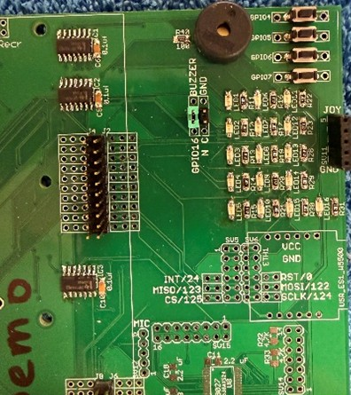
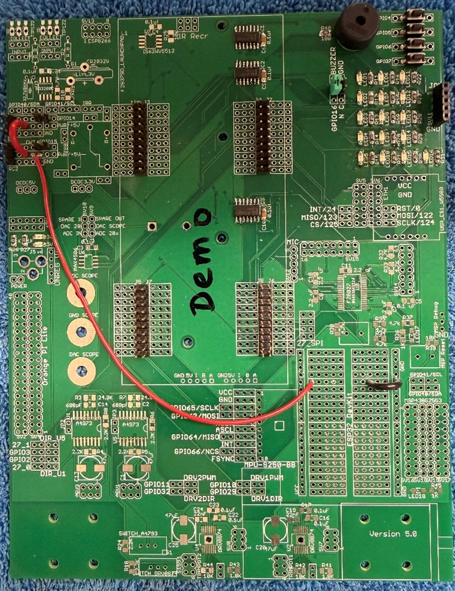
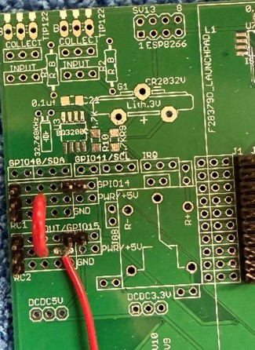

SE 423 Mechatronics
Homework Assignment #1
The Demonstration Check-Offs For Exercises 2, 3, 5, 7, 8, 9 And 10 Are Due By 5PM Tuesday, February 03.
Remainder Due On Gradescope, by 9AM Wednesday, February 04.
For this exercise, I would like you to go through the “C Essentials Training” course at https://www.linkedin.com/learning/c-essential-training (You first need to log in through the UIUC LinkedIn Learning portal with your university NetID to get past the paywall: https://web.uillinois.edu/linkedinlearning ). I am not going to check if you went through every exercise, but I highly recommend it. Go through each chapter. Then, for your Homework submission, submit your code and any screenshots showing the code working for
Yes, I know the solution code is included in the course’s download file. Try your best not look at the solutions, as that will help you teach yourself C. DO NOT just submit the solution code! The areas I want you to really think about as you go through this training are: the different types of variables in C and how to declare global and local variables. The printf statement and how to use it to print integer variables and floating point variables. Writing functions and how to call those functions in your C code.
There are several free C compilers that you can use to run the C code you write for these training exercises. I am thinking that using an online C compiler may be the easiest way to go. You can Google “online C compilers” to see which one you like, or you can try this one, which seems to work pretty well: https://www.onlinegdb.com/online_c_compiler. I think the biggest issue you will have with the online compilers is saving your files. So, I recommend cutting and pasting your code into a text editor and saving your work from there, instead of saving it from the online webpage.
Discard bits 8-15, the top 8 bits, from the hex numbers 0xC492 and print out the resulting number as an integer, a hexadecimal number, and a binary number. Now, do the same, but by just discarding bits 0-7, the bottom 8 bits. Implement the function again for 0xB8AA. Further, combine the high byte 0xA5 and the low byte 0x5D and print the result as an integer, a hexadecimal number, and a binary number using a function. Put the combined 2-byte number back into the byte-split function.
Solder your breakout board. (When in doubt, view the demo board in the lab.) In previous semesters, a TA made recordings while soldering a board very similar to your breakout board. On the board, he is soldering; you will see more parts than you have to solder. Keep that in mind when you are watching these videos, and use them as a guide, not as the exact way you need to solder this board. https://www.youtube.com/playlist?list=PL-csvMdAo235aAa4sEBl57S_syIAsQHoW



C:\ drive, and keep all your files there. It is also a good idea for you to
make backups of your lab files outside of your Git repository as you progress through the semester. Making
this extra backup will save you when we cannot figure out what went wrong with Git. Git is awesome and
normally works great, but every once in a while, I have seen issues that caused students to lose versions of
their files.
c:\superstdnt\SE423_HWrepo. The workspace folder to select would
be c:\superstdnt\SE423_HWrepo\workspace.
C:\superstdnt\SE423_HWrepo\C2000Ware_4_01_00_00\device_support\f2837xd\examples\cpu1\HWstarter”
and finally press “Finish”. Your project should then be loaded into the CCS environment. Let us then
rename the project “HW1<yourinitials>” by right-clicking on the project name “HWstarter”. In the dialog
box, change the name to “HW1<yourinitials>” i.e., HW1djb. Also, explore the project and find the
file “HWstarter_main.c”. Right-Click on “HWstarter_main.c” and select “Rename”. Change the name to
“HW1<yourinitials>_main.c”. To save you some headaches in the future, I recommend you take one more
step after creating a new “HWstarter” project. Right-click on your project name in the Project Explorer and
select “Properties.” Select “General” on the left-hand side. Then, in the “Project” tab, find the “Connection”
drop-down and select “Texas Instruments XDS100v2 USB Debug Probe.” Apply and Close.
Below is an introduction to the starter code given to you for this semester’s homework assignments. I used green for the code and black for my commentary. This listing omits a significant amount of the initialization starter code to keep it shorter. Read through the code and commentary below and find the same sections of code in your project you created above. You will have many questions, of course, as this is the first time you are reading through this code. We will be going over this code many times in lecture and lab sessions. Study this code and then start exercise 5.
//############################################################################# // FILE: hwstarter_main.c // // TITLE: Home Work Starter //############################################################################# // Included Files #include <stdio.h> #include <stdlib.h> #include <stdarg.h> #include <string.h> #include <math.h> #include <limits.h> #include "F28x_Project.h" #include "driverlib.h" #include "device.h" #include "f28379dSerial.h" #include "LEDPatterns.h" #include "song.h" #include "dsp.h" #include "fpu32/fpu_rfft.h" #define PI 3.1415926535897932384626433832795 #define TWOPI 6.283185307179586476925286766559 #define HALFPI 1.5707963267948966192313216916398 // Interrupt Service Routines predefinition __interrupt void cpu_timer0_isr(void); __interrupt void cpu_timer1_isr(void); __interrupt void cpu_timer2_isr(void); __interrupt void SWI_isr(void); // Count variables uint32_t numTimer0calls = 0; uint32_t numSWIcalls = 0; extern uint32_t numRXA; uint16_t UARTPrint = 0; uint16_t LEDdisplaynum = 0;
For these C exercises, I would like you to create any global variables or functions. Actually, the only functions we will create this semester will be global. We will never need to create a function inside another function, including not creating functions inside your main() function. You can, of course, put your global functions anywhere outside of other functions. It is just nice to have all your functions defined in one spot of your code so they are easier for you to find. The same goes for global variables.
void main(void) { // PLL, WatchDog, enable Peripheral Clocks // This example function is found in the F2837xD_SysCtrl.c file. InitSysCtrl(); InitGpio(); // Blue LED on LaunchPad GPIO_SetupPinMux(31, GPIO_MUX_CPU1, 0); GPIO_SetupPinOptions(31, GPIO_OUTPUT, GPIO_PUSHPULL); GpioDataRegs.GPASET.bit.GPIO31 = 1; // Red LED on LaunchPad GPIO_SetupPinMux(34, GPIO_MUX_CPU1, 0); GPIO_SetupPinOptions(34, GPIO_OUTPUT, GPIO_PUSHPULL); GpioDataRegs.GPBSET.bit.GPIO34 = 1;
… Purposely left code out here in this listing because it is all initializations that we will discuss in future labs and not important here …
EALLOW; // This is needed to write to EALLOW-protected registers PieVectTable.TIMER0_INT = &cpu_timer0_isr; PieVectTable.TIMER1_INT = &cpu_timer1_isr; PieVectTable.TIMER2_INT = &cpu_timer2_isr;
… Purposely left code out of listing …
// Configure CPU-Timer 0, 1, and 2 to interrupt every second: // 200MHz CPU Freq, 1 second Period (in uSeconds) ConfigCpuTimer(&CpuTimer0, 200, 10000); ConfigCpuTimer(&CpuTimer1, 200, 20000); ConfigCpuTimer(&CpuTimer2, 200, 40000); // Enable CpuTimer Interrupt bit TIE CpuTimer0Regs.TCR.all = 0x4000; CpuTimer1Regs.TCR.all = 0x4000; CpuTimer2Regs.TCR.all = 0x4000; init_serial(&SerialA,115200);
… Purposely left code out of listing …
// Enable global Interrupts and higher-priority real-time debug events EINT; // Enable Global interrupt INTM ERTM; // Enable Global real-time interrupt DBGM // IDLE loop. Just sit and loop forever (optional): while(1) {
Look below in the timer 2’s interrupt function, cpu_timer2_isr(), and you will see that UARTPrint is set to 1 every 50th time the timer 2’s function is entered. So both the rate at which timer 2’s function is called and this modulus 50 determine the rate at which the serial_printf function is called. serial_printf prints text to Tera Term or some other serial terminal program. Also note that after the serial_printf function call, UARTPrint is reset to 0. Think about why that is important. Add a comment to the UARTPrint = 0; line of code explaining why it must be set back to zero here to make this code work correctly. (Correctly means that the serial_printf function is called at a periodic rate.)
if (UARTPrint == 1 ) {
For exercise 8, I would like you to put most of your written code here. In future labs, you will find that code run here, in this continuous while loop “while(1)”, is less important code. It will be your lower-priority code, which does not have as strict timing requirements. Also, this is the only place in your code that you should call serial_printf. serial_printf is a reasonably large function, and depending on how many variables you print, it can take some time and is not deterministic.
serial_printf(&SerialA, "Num Timer2:%ld Num SerialRX: %ld\r\n", CpuTimer2.InterruptCount,numRXA); UARTPrint = 0; } } }
Right now, consider the calling of this function, cpu_timer0_isr() “magic”. (We will explain this in detail soon in the course.) “cpu_timer0_isr() is called every 10ms, without fail, in this starter code. (It actually “interrupts” the code running in the main() “while(1)” while loop.) In main() you can change the 10000 (microseconds) in the line of code “ConfigCpuTimer(&CpuTimer0, 200, 10000);” to have it be called at a different rate. For example, if you change the 10000 to 25000, the interrupt function will be called every 25ms.
// cpu_timer0_isr - CPU Timer0 ISR __interrupt void cpu_timer0_isr(void) { CpuTimer0.InterruptCount++; numTimer0calls++; if ((numTimer0calls%250) == 0) { displayLEDletter(LEDdisplaynum); LEDdisplaynum++; if (LEDdisplaynum == 0xFFFF) { // prevent roll over exception LEDdisplaynum = 0; } } // Blink LaunchPad Red LED GpioDataRegs.GPBTOGGLE.bit.GPIO34 = 1; // Acknowledge this interrupt to receive more interrupts from group 1 PieCtrlRegs.PIEACK.all = PIEACK_GROUP1; }
Right now, consider the calling of this function, cpu_timer2_isr() “magic”. (We will explain this in detail soon in the course.) “cpu_timer2_isr() is called every 40ms, without fail, in this starter code. (It actually “interrupts” the code running in the main() “while(1)” while loop.) In main() you can change the 40000 (microseconds) in the line of code “ConfigCpuTimer(&CpuTimer2, 200, 40000);” to have it be called at a different rate.
// cpu_timer2_isr CPU Timer2 ISR __interrupt void cpu_timer2_isr(void) { // Blink LaunchPad Blue LED GpioDataRegs.GPATOGGLE.bit.GPIO31 = 1; CpuTimer2.InterruptCount++;
Since “CpuTimer2.InterruptCount” increments by 1 each time in this function, the following if statement sets UARTPrint to 1 every 50th time in this function “cpu_timer2_isr()”. The % in C is modulus. Modulus returns the remainder of the division operation. So 23 % 50 equals 23, 67 % 50 equals 17, etc.
if ((CpuTimer2.InterruptCount % 50) == 0) { UARTPrint = 1; } }
First, change either the periodic rate at which Timer 2’s interrupt function is called or the 50 modulus in Timer 2’s interrupt function to make the default serial_printf function be called every 250ms. Debug your code and verify that the default text is printed to the TeraTerm Windows application 4 times a second.
Answer this question after finishing Q5 above. “CpuTimer2.InterruptCount” is incremented by 1 each time cpu_timer2_isr() function is run. (Remember the processor, “by magic”, runs this function at the periodic rate you set in “ConfigCpuTimer”.) If CpuTimer2.InterruptCount has incremented to 4823. How much time has gone by? This answer could be different from another student depending on what you changed to make serial_printf print every 250ms. Show your math for this calculation.
Write a global function and name it “saturate”. Do not use any global variables in this function. This function should have two float parameters, “input” and “saturation_limit”, and return a float. This return value is saturated by “saturation_limit”. “input” is the input signal (or input value) that will be saturated if its value is greater than +saturation_limit or less than –saturation_limit. For example, if “input” is passed 3.4 and “saturation_limit” is passed 5.5, then “saturate” will return 3.4. If “input” is passed 9.5 and “saturation_limit” is passed 5.5, then “saturate” will return 5.5. If “input” is passed -7.4 and “saturation_limit” is passed 5.5, then “saturate” will return -5.5. You will test this function in Exercise 8.
We are going to use the “sin()” function to generate a sine wave at the sample rate of 250ms. Create five global float variables and one global 32-bit integer:
float sinvalue = 0; float time = 0; float ampl = 3.0; float frequency = 0.05; float offset = 0.25; int32_t timeint = 0;
timeint = timeint+1; time = timeint*0.25; sinvalue = ampl*sin(2*PI*frequency*time) + offset;
satvalue” equal to your “saturate” function that is passed “sinvalue” to the
“input” parameter and constant 2.65 passed to the ”saturation_limit” parameter.
sinvalue with 3 digits of precision, and satvalue with 2 digits of precision. %.3f is
the formatter for printing a float with 3 digits of precision. %ld is the formatter to print a 32-bit
integer.
Timeint = 30, Time = 7.50sec, Input = 2.371, SatOut = 2.37 Timeint = 31, Time = 7.75sec, Input = 2.198, SatOut = 2.20 Etc...
| LED | GPIO | Bank | DAT |
SET |
CLEAR |
TOGGLE |
| LED1 | 22 | GPA | GPADAT |
GPASET |
GPACLEAR |
GPATOGGLE |
| LED2 | 94 | GPC | GPCDAT |
GPCSET |
GPCCLEAR |
GPCTOGGLE |
| LED3 | 95 | GPC | GPCDAT |
GPCSET |
GPCCLEAR |
GPCTOGGLE |
| LED4 | 97 | GPD | GPDDAT |
GPDSET |
GPDCLEAR |
GPDTOGGLE |
| LED5 | 111 | GPD | GPDDAT |
GPDSET |
GPDCLEAR |
GPDTOGGLE |
| LED6 | 130 | GPE | GPEDAT |
GPESET |
GPECLEAR |
GPETOGGLE |
| LED7 | 131 | GPE | GPEDAT |
GPESET |
GPECLEAR |
GPETOGGLE |
| LED8 | 25 | GPA | GPADAT |
GPASET |
GPACLEAR |
GPATOGGLE |
| LED9 | 26 | GPA | GPADAT |
GPASET |
GPACLEAR |
GPATOGGLE |
| LED10 | 27 | GPA | GPADAT |
GPASET |
GPACLEAR |
GPATOGGLE |
| LED11 | 60 | GPB | GPBDAT |
GPBSET |
GPBCLEAR |
GPBTOGGLE |
| LED12 | 61 | GPB | GPBDAT |
GPBSET |
GPBCLEAR |
GPBTOGGLE |
| LED13 | 157 | GPE | GPEDAT |
GPESET |
GPECLEAR |
GPETOGGLE |
| LED14 | 158 | GPE | GPEDAT |
GPESET |
GPECLEAR |
GPETOGGLE |
| LED15 | 159 | GPE | GPEDAT |
GPESET |
GPECLEAR |
GPETOGGLE |
| LED16 | 160 | GPF | GPFDAT |
GPFSET |
GPFCLEAR |
GPFTOGGLE |
| LED | GPIO | Bank | DAT |
| PB1 | 4 | GPA | GPADAT |
| PB2 | 5 | GPA | GPADAT |
| PB3 | 6 | GPA | GPADAT |
| PB4 | 7 | GPA | GPADAT |
| JoyStick PB | 8 | GPA | GPADAT |
The GPIO Registers are 32-bit registers, but we use unions and bitfields in C/C++ to control a single bit of each register
at a time. The “.all” part of the C/C++ union is the entire 32-bit register. The “.bit.GPIO19” is just one bit in the
32-bit register. So these two lines of C code perform the same operation:
| Register |
Usage |
Example |
|
GP?DAT |
GP?DAT.bit.GPIO? = 1; |
FOR TECHNICAL REASONS, DO NOT USE DAT FOR TURNING ON AND OFF LEDS. JUST USE IT TO READ THE STATE OF THE PUSHBUTTONS BELOW. |
|
GP?SET |
GP?SET.bit.GPIO? = 1; |
GpioDataRegs.GPBSET.bit.GPIO37 = 1; |
|
GP?CLEAR |
GP?CLEAR.bit.GPIO? = 1; |
GpioDataRegs.GPCCLEAR.bit.GPIO70 = 1; |
|
GP?TOGGLE |
GP?TOGGLE.bit.GPIO? = 1; |
GpioDataRegs.GPDTOGGLE.bit.GPIO98 = 1; |
Each GPIO pin, when configured as an input, has an internal pull-up resistor that can be enabled or disabled for that pin. With the passive push button on our breakout board, we will need to enable the pull-up resistor.
| Register |
Usage |
Example |
|
GP?DAT |
If GP?DAT.bit.GPIO? = 1, the pin is logic high (3.3 V). |
|
Using the GPIO reference tables above (note the example code in the table), add code to your CPU Timer2 interrupt service routine to toggle on and off LED10 and 11 every 100ms. In addition, if pushbutton 1 is pressed, toggle LED12 and LED13 on and off. Moreover, if pushbutton 4 is pressed, toggle LED14 and 15 on and off.
Have some fun with the LEDs and switches, and impress me with some fun shapes and patterns. For example, have these different shapes display when pushbuttons are pressed. Also, when another pushbutton is pressed, have LEDs chase each other in a fun pattern. You are not allowed to use a delay function here. Instead, perform the LED change at the time rate within one of the CPU timer interrupt functions.
Find the result of the following C statements. First, do the calculations by hand and show your work. Then try these
calculations one at a time on your Launchpad to verify the answers. An easy way to display the result is to send the value
over the serial port using the “serial_printf” function.
serial_printf function.
Read section 6.3 of the F28379D C reference guide (https://coecsl.ece.illinois.edu/se423/C2000CcompilerRefGuide.pdf). How many bits (not bytes) does this processor use for each of the following variable types using the COFF library: int, long int, unsigned int, short int, char, double, float?
To give you a better understanding of the data transmitted to the Tera Term serial terminal, if an oscilloscope was connected to the transmit line (TXD) of your TMS320F28379D processor, what would be displayed if the baud rate was set to 115200 bits per second and only two ASCII characters, “4” and “B”, were sent in sequence? Scoping the TXD line is not required, but you are welcome to figure out the waveform that way.
Make sure that you comment you code and put your initials in your Gradescope submission! See https://marius-juston.github.io/SE-423---Class-Material/Homeworks/commenting_code_example.pdf for how we expect the code to be commented like!